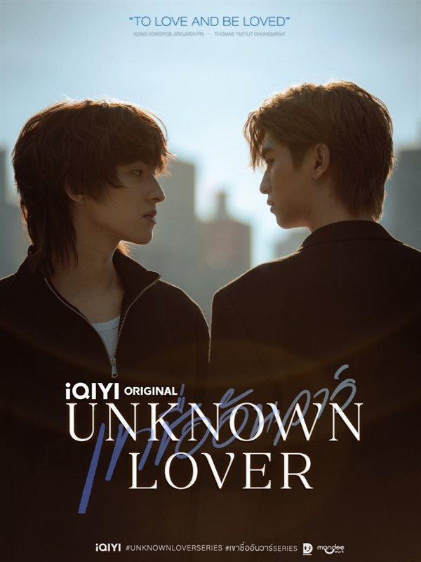

Rõ ràng tôi gặp vấn đề với thứ năng lượng mà anh ta tỏa ra.
gay energy
Loc 300
Rõ ràng tôi gặp vấn đề với thứ năng lượng mà anh ta tỏa ra.
gay energy
Loc 300Nếu tôi là con gái, có lẽ tôi cũng sẽ thích Anwar.
sớm
Loc 485Chỉ là trong bụng có cảm giác lạ lùng và không biết nên đặt tay vào đâu thôi.
butterflies
Loc 666Thật tốt khi có thể biết rõ bản thân yêu thích điều gì và theo đuổi nó một cách đầy tự tin.Loc 686
“Đôi khi, một con người cũng có thể khiến người khác có cảm giác đó. Cậu không nghĩ vậy sao?”
gay
Loc 696“Anh là kiểu người đào hoa à?”
hẹ hẹ hẹ
Loc 849Người yêu… người yêu nào?
con cụ =))))))
Loc 1065“Người yêu tôi muốn xem.”
lạy m
Loc 1447“Nếu cậu cảm thấy không ổn… vì bất cứ chuyện gì thì xuống gõ cửa phòng tôi nhé.”
làm gì
Loc 1744Đó là một cô gái có dáng người cân đối mặc chiếc váy hai dây ngắn đến đùi.
lắm mối thế dme đào hoa vkl
Loc 2008“Nhưng anh đã hứa là sẽ ngủ lại mà.”
m hứa ngủ lại với bn người v tk anwarrrrr
Loc 2065anh ấy không lừa dối ai rằng họ là duy nhất và họ chấp nhận ở bên anh ấy như vậyLoc 2215
“Hãy ngoan một chút đi… và giữ những mặt xấu lại trên giường thì không tốt hơn sao?”
j dz anwar
Loc 2470Chừng nào giữa tôi và người đó chỉ là tình dục và người yêu của họ không liên quan đến tôi thì mọi chuyện vẫn ổn.Loc 2584
Gặp phải người như tôi thì dù có là một mối quan hệ chỉ để trao đổi tình dục…Loc 2609
Đáng yêu thật.Loc 2648
Chết tiệt. Lại đáng yêu nữa rồi.Loc 2658
Không để cậu ta mãi ngây thơ thế này đâu.
?
Loc 2694Nhưng lạ thật đấy, nếu một trong hai người nảy sinh tình cảm thì sao?”
cook
Loc 2868rằng tôi đã biết… hôn kiểu người hôn giỏi là như thế nào.
dkm
Loc 2932“No… Không… Không muốn nữa.”
=)))) sợ rrr
Loc 2962…Lại thua rồi.
bố lạy mmmmm
Loc 3021“Tôi nghĩ là anh chỉ đùa… đúng không?”
u wish hahaha
Loc 3075“Vậy thì cứ coi như thế đi.”
dcm???
Loc 3089“À… bọn mình vẫn là bạn, đúng không?”
d hiểu bạn kiểu d gì nút lưỡi nhau
Loc 3116ngẩng đầu lên hôn nhẹ lên môi người vừa cất lời.
buần :(
Loc 317813. French Kiss
có tiềm năng
Loc 3250Nếu anh ấy thực sự yêu mày đến mức đó từ đầu thì đã chẳng có người thứ ba nào xuất hiện rồi.”
legit
Loc 3308Chờ đến ngày anh ấy quay lại như xưa.”
bố lạy connnnnn
Loc 3337Anh làm như vậy là sao chứ…
m tỉnh lại chưa
Loc 3430Không còn lời bào chữa nào tôi có thể dựng lên cho anh ấy.
trộm vía tỉnh rồi
Loc 3491Tôi bắt đầu thấy chùn lòng,
biết sợ rrrr
Loc 3580rồi cúi xuống hôn tôi lần nữa.
ựa
Loc 3631“Cũng được mà.”
tạm
Loc 3694“Cởi… cởi áo làm gì vậy?”
?????? còn làm gì đc nữa hả mmmmm
Loc 3710quyết định nắm lấy vạt áo mình.
=)))))))))
Loc 3720“Nhìn cậu như này thì sao mà không có hứng được.”
aishhj chếk tịk
Loc 3739“Vậy chúng ta sẽ làm gì?”
thôi 2 đứa ôm nhau đánh 1 giấc đi
Loc 3757“Nếu muốn biết thì anh sẽ dạy à?”
đưa em vào đời đeeee
Loc 3888Nếu lúc đó chúng ta vẫn không nói chuyện được thì chắc sẽ phải tạm xa nhau một thời gian rồi.”
vãi l tk chó gaslight hả bây
Loc 4004“Chen.”
á đù tình địch à
Loc 4080“Chưa từng.”
flexxxxxxxxx
Loc 4123Anh khiến người bên cạnh cảm thấy yên tâm,
bảo sao cả trai cả gái đều theo
Loc 4263“Tôi còn chưa biết là tốt hay không thì đã có người vội ói mất rồi. Chắc phải thử lại vào ngày mai để biết câu trả lời thôi.”
oiiii cai dismeeee
Loc 4342“Đừng đứng cắn môi mình nữa… cậu đến cắn môi tôi thì hơn đấy.”
đù
Loc 4515Tôi chẳng mảy may lo lắng chuyện bị mẹ mắng nữa vì nếu bị mắng mà đánh đổi được những thứ tôi đang có lúc này thì cũng đáng mà.
chịu rr
Loc 4586Chương 17: Put It In Your Mouth
first
Loc 461417_Put It In Your Mouth
rất hứa hẹn
Loc 4615Ngày nào mà cậu ấy giỏi hơn nữa… thì tôi sẽ không nương tay đâu.
ngày ấy đến mau lên
Loc 4685Tôi mỉm cười, kéo cậu ấy sát vào rồi cùng nhau ngả xuống tấm đệm mềm.Loc 4787
Nhưng nếu hiện tại tôi đang thấy hạnh phúc thì chuyện tương lai, cứ để là chuyện của tương lai cũng được mà… phải không?Loc 4813
“Thì… có phần thưởng không đó?”
m ơi????
Loc 4822Chương 18: Skin Melt Like Butter
interrupted
Loc 4824“Đi tắm cho thơm rồi xuống với tôi nhé.”
bây bi!???
Loc 5040“Thích hơn là thích tôi không?”
khó r
Loc 5096“Ghen à?”
áuuuu
Loc 5099Anh đâu có thích tôi đâu.”
cay chưa
Loc 5126Anh có vẻ rất thích kiểu hỏi đáp này.
hỏi đáp kiểu vcl
Loc 5149“Có thể nghe hơi kỳ nhưng cậu đã ai nói rằng cậu rất đáng yêu khi ở trên giường chưa?”
thích ko?
Loc 5190Anwar–người đang dụi mặt vào vai tôi.
gay
Loc 5276Được nắm tay, ôm, hôn mà không phải lo lắng rằng anh ấy sẽ làm thế với người khác nữa.”
ỏ
Loc 5370“‘ Cum… On me?’”
ngon
Loc 5500“Chăm sóc tốt quá nhỉ. Bình thường anh đối xử tử tế như nhau với tất cả giới tính à?”
dỗi
Loc 5515‘Truth or Dare’.
every time istg
Loc 5608Chưa.”
nhưng sẽ cmmmm
Loc 5682“Alo, Chen… giờ anh rảnh không?”
vãi loz what’s happeninggggggg
Loc 5771Chương 20: Sugarcoat The Poison
real first
Loc 5774Tôi mới xin đi rửa mặt một chút thôi, khi quay lại thì cậu đã biến mất rồi điện thoại cũng không liên lạc được, về nhà thì cũng chẳng thấy cậu đâu cả.”
dỗi vkl
Loc 5923“Vậy tôi ghen kiểu gì được chứ, giữa tôi và anh đâu có gì cả đâu.”
cho sin cái danh phận
Loc 5981để nó rũ xuống che hông và cặp mông trần trụi của mình.
ngon vl
Loc 6016“Cậu muốn xem gì?”
sếch gay
Loc 6023“Thích.”
chịu r =)))))
Loc 6040“Vậy rên to một chút rồi bảo tôi làm tiếp đi, được không?”
dissssssssssss dcmmmmm
Loc 6111“Thích kiểu nào hơn?”
vãi cả loz
Loc 6165Tôi gọi khẽ và tôi chắc chắn em nghe thấy nhưng cậu lại không đáp lời.
quả đại từ vãi loz
Loc 6394“Tôi đâu có gắt!” Cậu phản bác… với giọng còn gắt hơn.
=))))
Loc 6405…thì tôi đưa ai khác đến làm gì nữa chứ.
chắc chưa cmm
Loc 6484Nội dung tin nhắn… đại loại là nhớ anh rồi rủ nói chuyện, rồi lại nhấn mạnh là nhớ rất nhiều và kết thúc bằng một câu muốn gặp mặt.
cm tk anwar m nhanh chóng giải quyết đống này giúp t với
Loc 6509Chen vừa nhắn tin nên chắc hôm nay tôi sẽ đi xem phim với anh ấy.”
chọc chó vkl =)))))
Loc 6571“Tôi mong một ngày nào đó, anh sẽ hiểu cảm giác yêu đến mức muốn chiếm hữu… nhưng lại không thể làm gì ngoài việc nhìn người ấy đi bên người khác. Tôi mong một ngày nào đó anh sẽ hiểu tôi đang cảm thấy thế nào.”
t cũng mong dcm
Loc 6702Tôi chỉ mới lơ là cậu một chút thôi mà cậu đã lớn nhanh thế này rồi thì không biết có phải tôi dạy giỏi quá hay không nữa.
yummmm
Loc 6758chỉ cần ôm nhau ngủ thôi cũng được.”
ai tin m
Loc 6787Chương 23: Can’t Keep My Hands Off You
car chấn
Loc 6791“Thích à… không biết nữa. Chắc là thích anh đấy?”
uk chac dz
Loc 6901Không rõ tôi đã làm trúng điểm nào nhưng Anwar bỗng trở nên hoang dại rõ rệt.
bcuoi vl
Loc 7110“Cưng hồi hộp sao?”Loc 7258
“Đừng… dừng lại…”
dcm =)))))
Loc 7261“Bây giờ anh còn muốn ôm tôi nữa không?”
hoi kho awar rrr
Loc 7335Câu hỏi định cất lên rằng anh sẽ đi đâu bị tôi nuốt ngược trở lại.
ditme buc boi vail 2 dua nay d chiu chia se
Loc 7418tay trong tay.
disss
Loc 7480“Ba ngày!” Tôi cãi, “Nhà to thế mà lại chỉ có mình tôi ở.”
tui? than vl uhuhu
Loc 7555“Nhớ đấy, mà hôm nay vẫn đi hẹn hò với người khác.”
hahahahaha
Loc 7609“Cậu đã thắng ngay từ nụ hôn trên xe rồi.”
disme tk cho lam t confused vkl
Loc 7639Và vì em thực sự nhớ anh nên tôi sẽ nghĩ đến gương mặt anh rồi gọi tên anh khi tự chạm vào chính mình.”
m oi????
Loc 7660thì hãy khiến tôi muốn ôm anh đi.”
auuuuuuuuuuuuuuuuuuu
Loc 7668“Không phải ai cũng thấy thoải mái giữa đám đông đâu.”Loc 7907
“Lần cuối cậu tự xử là khi nào?”
ke 8 lang nguoi 8kg
Loc 7984Chương 26: You and I Doing Something
đụ
Loc 8045“Được chứ. Em không cần phải lo gì cả đâu.”
bro tốt đến cái mức =)))))))))))))
Loc 8119Tôi dùng nó bịt mắt cậu.
biết chơi quá nhỉ
Loc 8406Blue cũng đưa tay lên, chạm vào tay tôi, khẽ đẩy cho ngón tay kề sát môi rồi bắt đầu mút lấy chúng.
ngol
Loc 8447Cậu ấy đẹp… đẹp đến mức tôi không thể rời mắt khỏi gương mặt và cơ thể đang chuyển động đầy mê hoặc trên người tôi.
đắm rồi
Loc 8468Chương 27: Cloud Nine
đồ chơi
Loc 8476Bella.
nhiều người vl đ nhớ ai với ai
Loc 8533“Anh phải lòng tôi rồi à?”
vãi òooo
Loc 8602“Tôi phải lòng cậu được một thời gian rồi mà giờ cậu mới nhận ra à?”Loc 8604
Nếu tôi nói tôi không muốn thấy anh ở bên người khác vì tôi không thích cảm giác khi phải biết những chuyện đó… thì anh có thể làm vậy cho tôi không?”
ối dồi ôi
Loc 8653“Tôi sẽ cố.”
ơ cái disss
Loc 8657Đầu óc tôi vẫn cố tìm câu trả lời xem liệu anh có thích món quà tôi mang đến không.
giờ này còn hỏi
Loc 8713cây gậy dài với những hạt tròn đen xếp theo kích thước, từ lớn nhất ở đầu đến nhỏ dần ở gốc, tổng cộng sáu hạt.
thật là biết chơi 😩
Loc 8733“Fuck me.”
yummy 😋
Loc 8769Ánh mắt chúng tôi giao nhau, khoái cảm dâng cao đến mức tôi hiểu được cảm giác ‘lên thiên đường’ là như thế nào.
vkl
Loc 8802Và lúc này, điều tôi chắc chắn là Anwar đang không vui… rất không vui.
ko danh phan ma ghen ghe dz
Loc 8946“Cậu nghĩ sao nếu tôi nói cậu rất đẹp?”
anwar oi nhanh len
Loc 8971tôi tò mò muốn biết cậu đã có người yêu hay chưa.”
lo phai manh dan nhu the
Loc 8978Tôi chỉ muốn biết Anwar có muốn tôi đi hay không thôi.
deo me =)))))))
Loc 9063“Muốn qua ngủ phòng tôi không?”
jordan i love you
Loc 9110“Simon, chúng ta… đi chơi nhé?”
d hieu lam cai co che?
Loc 9163Tôi không muốn làm Blue tổn thương như đã làm với hai người kia. Vì thế, tôi không dám dấn thân hoàn toàn như trước.
vl xin loi anwar =(((((
Loc 9197“Bangkok cũng không xa lắm.”
vkl toi da khoc toi rat xin loi vi da chui anwar
Loc 9200“Anwar hay tôi?”
m tay r con oi =)))))))))))))))))))))))
Loc 9272Nếu đúng như tôi nghĩ thì sao Simon biết được?
i guess everyone knows except you
Loc 9276“Vậy tôi thú nhận nhé. Đây không phải lần đầu tôi hẹn hò với người từng ngủ với Anwar.”
the ma m bao d tranh gianh =)))))))))
Loc 9296Thậm chí… có lần cậu ta còn ở trong phòng khi tôi và một người tình của cậu ta làm chuyện đó.
loz j dz mmmmm
Loc 9300“Nhưng Anwar… tôi thích anh ấy nhiều lắm, nhiều đến mức tôi không thể đi tiếp với anh được.”
dme 2 dua chung m
Loc 9335“Nếu tôi gọi anh thì sẽ là lúc đôi môi tôi cho phép anh hôn nó.”
aichachaaaaa
Loc 9412“Vì tôi thích anh ta.”
bo lay m day
Loc 9465Anh thậm chí còn chẳng thích tôi mà.”
doi~ vkl hjxx
Loc 9473Tất nhiên, tôi muốn Anwar thích tôi hơn bất kỳ ai vì tôi thích anh rất nhiều.Loc 9512
“Blue, tôi thích cậu rất nhiều.”Loc 9515
cho đến khi tôi quyết định nhắn tin trò chuyện cùng Chen.
lam lop vkl blue oi
Loc 9550Dù không thích bạo lực nhưng tôi thề là tôi chưa bao giờ muốn đấm Jordan như lúc này.
jordan choc cho' vl =)))))
Loc 9712“Tôi thích cậu ấy lắm nên tôi muốn làm rõ mọi chuyện đến phát điên rồi này.Loc 9718
“Chỉ đi làm lành hay tỏ tình luôn thế?” Jordan vẫn trêu, hét to hơn khi tôi không trả lời mà bước đi, “Đừng làm gì ngu ngốc nhé, tôi không thích giao du với lũ ngốc đâu!”
ditcuuuuu toi yeu jordan
Loc 9730“Tôi đến đưa cậu về nhà.”
kiu be'!!!!!!
Loc 9777“Vậy tôi muốn đến gặp người tôi thích rất nhiều thì có gì lạ hay cần lý do gì thêm không?”
chaaaaaaa
Loc 9792“Ý là cậu muốn tôi giúp để cậu bớt thích tôi hả?”
?
Loc 9809Tôi không chắc điều gì khiến mình xiêu lòng, nó là giọng nói của Anwar hay ánh mắt van nài của anh.
het kiu
Loc 9813“Tôi tệ đến mức nói ‘thích rất nhiều’ mà nghe như chẳng có giá trị gì, đúng không?”
nghe kho^? vcl =)))))))
Loc 9848“Tôi thích cậu… theo cách mà tôi không bao giờ muốn buông tay. Tôi thích cậu nhiều đến mức không thể nghĩ đến ai khác được. Tôi thích cậu nhiều đến mức tôi muốn cậu yêu cầu tôi điều gì đó và tôi cầu nguyện mình sẽ có đủ can đảm để chấp nhận nó.”
T_T
Loc 9924giờ đây chỉ cần nghĩ đến việc ai đó ôm cậu thôi là cũng đủ khiến tôi phát điên rồi.”
oi doi dat oi
Loc 9934Dù sự bốc đồng đã khiến tôi dễ dàng trả lời anh ấy nhưng những lo lắng của tôi không hề giảm bớt.
haizzz
Loc 10012anh ấy không bao giờ nói điều gì mà anh ấy không biết hoặc không chắc chắn.Loc 10126
“Ừ, ghen.”
hehehe
Loc 1018532: Don’t Make Me Beg
cháy quần
Loc 10213“Thưởng cho tôi nhé?” Anh vòng tay ôm chặt eo tôi, kéo tôi gần hơn cho đến khi cơ thể chúng tôi áp sát.
ác đạn
Loc 10534“Được, nhưng không quan hệ.” Tôi thì thầm, “Không thâm nhập.”
sèd
Loc 10536“Cậu mới là người phải cầu xin tôi.”
hỏng
Loc 10664“Yêu tôi… yêu…”
toang
Loc 10719“Cậu ấy là người tôi thích.”Loc 10778
“Cậu ấy… là người tôi muốn nghiêm túc.”Loc 10780
“Nhưng tôi muốn về nhà và tôi sẽ đi ngay bây giờ. Nếu anh muốn tiếp tục nói chuyện với anh ấy thì cứ đi. Tôi sẽ gọi taxi.”
căng cực =)))))))))))
Loc 10831“Tôi tắm chung với cậu được không?” Câu hỏi khiến tóc gáy tôi dựng đứng.
loz mẹ
Loc 10899“Tôi sẽ không làm gì đâu. Tôi chỉ muốn tắm cùng cậu thôi.”
uk ý
Loc 10904“Chỉ là muốn chiếm hữu.”
áuuuuu
Loc 10930Anh khẽ cúi xuống, như thể đang đánh giá phản ứng của tôi và xin phép trước khi đặt môi mình lên môi tôi.
omg
Loc 10976“Sexy cả ngày.” Anwar nhếch miệng cười khi tôi hạ mình xuống giường và bò về phía anh.
ngol vl
Loc 11001Nhưng tôi không thể phủ nhận rằng Jamie từng ở vị trí của tôi và tôi có thể lại rơi vào vị trí của anh ấy.
insecure dữ
Loc 11021Bây giờ, cậu là người quan trọng nhất với tôi. Rõ chưa?”Loc 11037
test note riêng
Loc 11079cả 2 tk làm t điên đầu rồi nha.
tk anwar cứ koi trừng!!
Cập nhật: 29/06/2026